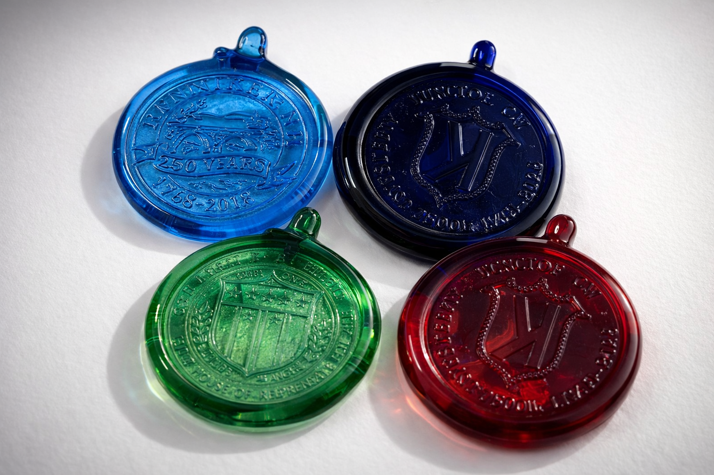
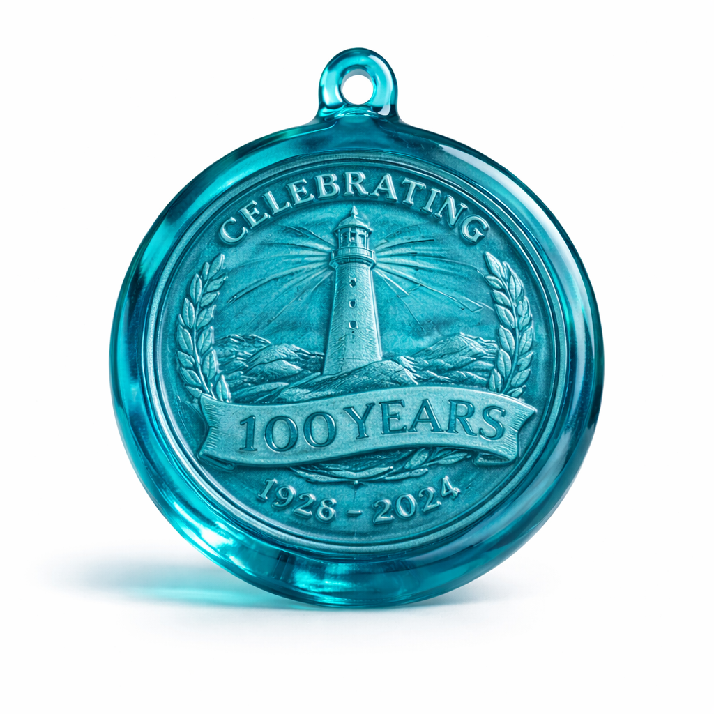
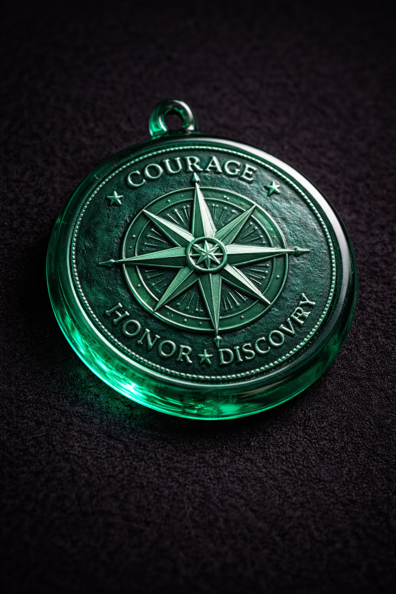
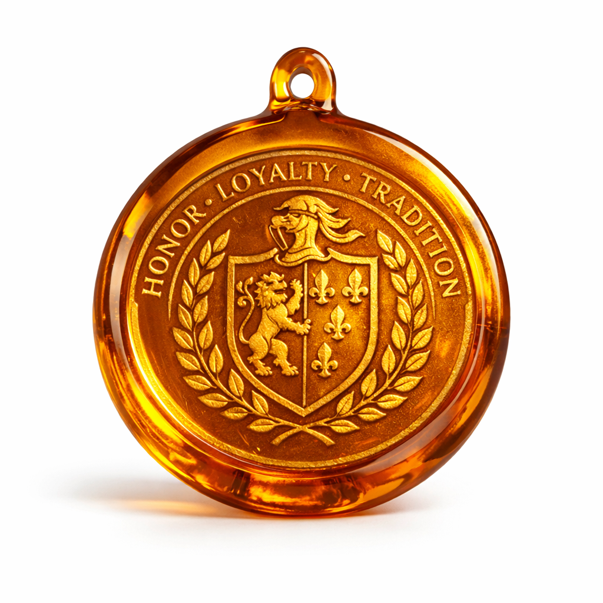

Your image
Send any image—logo, portrait, artwork. We turn it into a precision CNC brass stamp.
Artisan glassblowing · Western Massachusetts
CNC brass stamps · Any image · Made in small batches for towns, institutions, and artists.

Pressed by hand using custom CNC brass stamps for crisp detail and a warm, tactile surface.
Each medallion is one-of-a-kind: your design, precision brass, hand-pressed glass.
Send any image—logo, portrait, artwork. We turn it into a precision CNC brass stamp.
Our brass stamps are machined for sharp detail and durability, so every piece is crisp and repeatable.
Molten glass is hand-pressed with a custom made brass stamp. You get the warmth of craft with the clarity of your design.
Schuyler Hayes is a glass artist based in Western Massachusetts, focused on reviving pressed glass as a contemporary craft. With over a decade working in hot glass—sculpture, blown vessels, and traditional techniques—he now concentrates on pressed glass medallions that honor towns, events, and community traditions across New England.
Each medallion is pressed by hand in small batches using a custom CNC brass stamp and molten glass. The work draws from historic pressed glass while adapting it into a contemporary format that lets towns and organizations celebrate their identity in a tangible way.
This project grew from a desire to connect glassmaking with local history and everyday community life. By collaborating with town committees and local groups, Hayes creates objects that carry regional stories while helping keep the tradition of pressed glass alive.
Each commission is designed around a specific image or idea, from civic projects to personal milestones.
Ideal for art awards, community honors, staff recognition, or special presentations—when you want something more memorable than a standard plaque or trophy.
For events, anniversaries, memorials, festivals, historic landmarks, or limited editions. These become collectible objects with strong visual and sentimental value.
Showcase a logo, seal, or symbol in a way that feels elevated and tactile. Strong for client gifts, milestones, and presentation pieces.
Mark weddings, family events, retreats, or private gatherings with keepsakes that feel personal and considered, rather than mass-produced favors.
Whether you need a commemorative medallion, branded gift, or custom art object, I can help bring your design into glass.
Email with your concept, quantity, approximate size, and any reference images to get started.
Examples of custom hand-pressed glass medallions.



A Sizes range from small pieces suited for jewelry or inserts to larger medallions for awards and display. Include a target size when you reach out and I'll confirm what's possible.
A Pricing depends on size, detail, and quantity. Share your idea and I'll put together a specific quote rather than a one-size-fits-all number.
A Lead time varies with project scope and studio schedule. Smaller runs often move faster; new stamp development or larger orders take longer. If you have a deadline, mention it and I'll let you know what's realistic.
A Vector files (AI, EPS, SVG) are ideal, but clear high-resolution PNG, PDF, or JPEG artwork can also work. Bold, high-contrast images translate best—send what you have and I can advise.
A Yes. Some designs may need to be simplified or adjusted, but logos, drawings, and certain photos can all become strong pressed glass imagery.
A Yes. Finished work is packed carefully and shipped; costs depend on order size, destination, and packaging needs.
A Single custom pieces are sometimes possible, and larger editions are also available. Let me know what you're imagining and I'll outline options.
A Yes. If you have a concept but not a finished file, I can help shape it into artwork that will read clearly in glass.